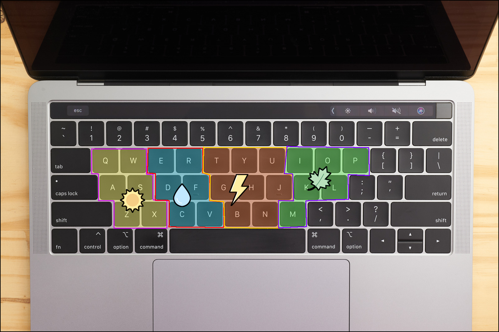

Brief Synopsis
Weather Instrument is an interactive musical website designed for toddlers. It transforms four natural weather elements—sun, rain, thunder and wind—into a playful musical instrument. By clicking the weather icons, users generate piano notes with random pitches and fixed durations, accompanied by falling animations. When the falling elements reach the ground, they trigger impact sounds that create rhythmic percussion. Through repeated interactions, users can layer and combine piano notes with drum sounds to create unique musical compositions. The replay function also allows users to listen to their previous performance.
Unlike traditional musical instruments, this project focuses on encouraging open-ended exploration and playfulness rather than accurate musical performance. Through simple instructions, visual animations and sound, users can enjoy the process of triggering and experimenting with music. Similar to how toddlers freely explore percussion instruments by tapping them, Weather Instrument aims to provide an intuitive and low-pressure environment where young children can experiment with music and enjoy the simple pleasure of making sounds.
Scenario 3: Musical Toy for Toddlers
Prompt:
Design a way for young children with minimal language skills to explore music.
Context:
Browser based musical instruments offer users the ability to dynamically perform music and explore complex audio design. While these interactions allow for a depth of control, they can be intimidating for many adult users, let alone young children whose language skills are still developing.
Scenario Response
The project is designed for toddlers, who have limited reading skills and experience with digital interfaces. Therefore, the design prioritises intuitive interactions, familiar visual elements and minimal text, allowing children to understand and explore the instrument without complex instructions.
The purpose is to encourage children to explore music and creativity in an intuitive, low-pressure environment, rather than focusing on musical accuracy or performance.
The worth of the project lies in accessibility, exploration and playfulness. Recognisable icons and animated feedback make the interface approachable, while controlled randomness allows children to experiment freely without worrying about making mistakes. The playful visual style and sound interactions aim to encourage curiosity, repeated interaction and enjoyment of music-making itself.
Core Interactive Features
Weather Interaction
The instrument features four weather elements: sun, rain, thunder and wind. Users can trigger each element by clicking its icon or pressing the corresponding keys on the keyboard, generating random musical notes and falling visual elements.
Both mouse and keyboard inputs are designed to be easy to trigger. I mapped the alphabet keys to four regions corresponding to the weather icons on the screen: keys on the left trigger sun, the middle keys trigger rain and thunder, and keys on the right trigger wind. This allows children to explore the instrument by pressing keys freely, even without knowing their specific functions. The spatial relationship between the keyboard and screen also helps children discover how their actions relate to visual and auditory feedback.

Each weather element has its own pitch range and note duration, designed to reflect its natural characteristics:
- Sun: Higher pitches and medium-length notes create a bright and warm feeling.
- Rain: Slightly lower pitches and longer notes reflect the continuous flow of rain.
- Thunder: The lowest pitches and shortest notes resemble sudden, heavy thunder.
- Wind: Soft, sustained notes with a pitch range similar to rain evoke the gentle movement of a breeze.
Notes are randomly selected from predefined arrays, using mostly pentatonic notes to maintain relatively harmonious combinations. This supports the project's idea of a musical experience without right or wrong outcomes.
Rather than using traditional piano keys, I chose weather elements as natural metaphors to connect music with visual and sensory experiences. Young children often explore their surroundings through sensory experiences, so combining recognisable weather imagery, movement and sound can make the interaction more engaging and intuitive. The cartoon-style weather icons also reduce reliance on written instructions, supporting accessibility and playful exploration.
Falling Animation
Each weather element has its own falling animation to reflect its natural characteristics:
- Sun: Falls slowly in a straight line, inspired by the gentle feeling of sunlight shining down.
- Rain: Falls relatively quickly in a linear motion, resembling falling raindrops.
- Thunder: Falls rapidly and slightly increases in size as it reaches the ground, simulating the sudden flash of lightning.
- Wind: Moves gently from side to side while falling, creating a floating effect similar to a soft breeze.
Similar to how weather occurs across an area rather than within fixed boundaries, the falling positions are randomly generated across the entire screen instead of being restricted to specific sections.
When an element reaches the grass, it triggers a short percussion sound and visual feedback, including a grass animation and a brief brightness change.
I designed these animations to reflect the movement of different weather elements and strengthen the sensory experience of the website. Giving each element a distinct visual character helps children recognise the differences between interactions and understand their outcomes. This also makes the instrument more playful and engaging.
By connecting visual movement with auditory feedback, the animations reinforce the cause-and-effect relationship between user actions and the resulting sounds.